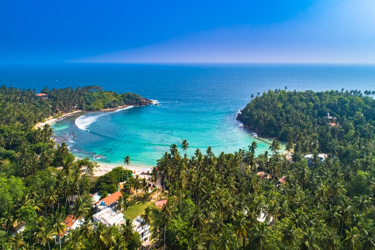

The South Asian island nation of Sri Lanka offers visitors a dizzying array of things to see and do. You can experience tourist attractions like the towering new Lotus Tower in the capital city of Colombo, or visit the Pinnawalla Elephant Sanctuary, where you can help feed the elephants. There are also outdoor attractions like doing a leopard-watching safari at Yala National Park or hiking a pilgrimage trail to the summit of Adam's Rock.
Sri Lanka is a mesmerizing island nation, South of India. Surrounded by the blue Indian Ocean from all sides, the island covers an area of 65,610 sq kms. Blessed with a diverse landscape ranging from lush green tropical forests to highlands, arid plains and pristine sandy beaches, this county has something for every one.